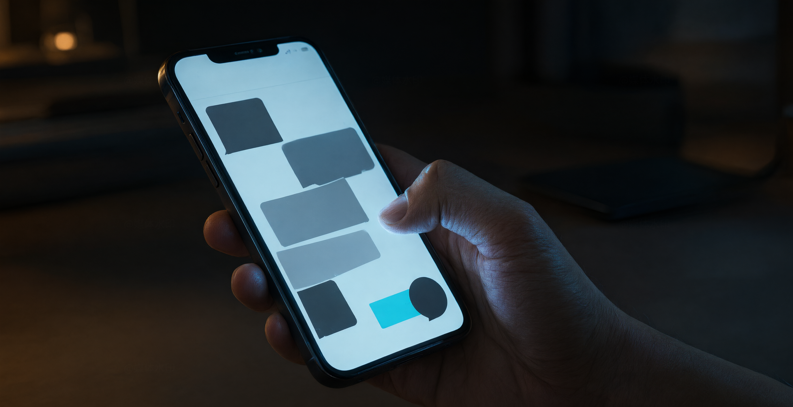
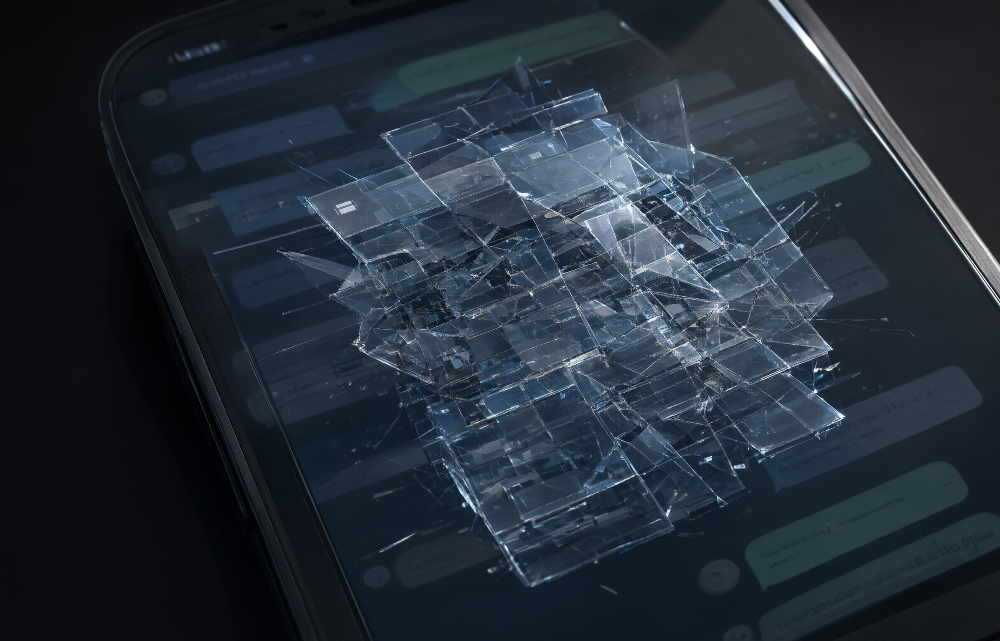
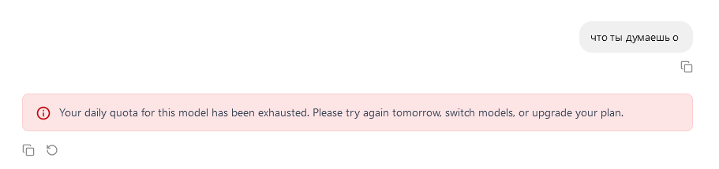

Официальный APK бесплатной нейросети Z.ai падал на вложениях и в итоге я поднял свой форк, а тут и GLM 5.4

Ну неужели такая компания как Z.ai не может сделать нормальное бесплатное приложение для чата, которое не вылетает на вложениях? Думал я недели две-три назад, после того как официальный APK Z.ai выбросил меня на кнопке «приложить файл». А бесплатная нейросеть Z.ai без своего приложения это вечная вкладка в браузере телефона, и она напрягает. Начал искать самоделки! Нашёёёл! А нет, ну да, нашел, но кто-то додумался кнопку домой посадить прям на кнопку отправить. Опять ищу. Нашёёёл — вообще фигня какая-то. Итак раза три. Плюнул. Надо делать своё, ну почти своё, глянем репо. Отлично, репо на месте. Так началась эпопея «переделать пару строк в коде, чтобы функция скачивания в APK работала нормально»!
Пара строк, ага
Пару строк. Потом посчитал: пятнадцать редакций, в каждой от пары до шести правок. У исходного автора MainActivity.kt — 422 строки: Kotlin, стек Android и и без лишних слоёв. У меня 1458, плюс отдельный класс на 44 строки только ради прокрутки. Так что «пара строк» обернулась долгим марафоном, и каждая правка приложения Z.ai давалась всё тяжелее.
Но сначала честно пытался жить с чужими сборками: перебрал три штуки, и каждая сборка APK приложения ломалась по-своему. Первая падала на прикреплении файла: молча, без ошибки, закрылась и всё. Вторая не давала нажать «Отправить», потому что кнопка «Домой» сидела ровно поверх неё. Третья открывалась, но половину интерфейса резала так, что до поля ввода доходил не каждый палец.
И вот сидишь такой, смотришь на этот интерфейс и думаешь: либо я слишком многого хочу, либо сделать нормально не так уж сложно.
Почему обёртка, а не своё с нуля
Писать клиент с нуля к сервису, у которого нет публичного API и открытых исходников, это как строить дом без фундамента, но с красивой крышей. Нельзя.
Это не программирование с нуля: честный путь только такой: взять веб-версию Z.ai и завернуть в WebView, чтобы приложение чат бесплатной нейросети Z.ai работало как обычная программа, а не вкладка в браузере. Свои жесты, свои кнопки, нормальный выбор файла, нормальное скачивание: под капотом Android-фреймворк, и приложение на андроид получает нативные диалоги. Внутри всё равно сайт, но снаружи уже приложение: чат открывается как обычно. Причём это не болталка, а ИИ-агент: он держит длинные сессии, сам запускает инструменты, гоняет файлы туда-сюда. Обёртка приложения должна всё это переживать, а не мешать.
Вопрос только в том, как из веб-версии сделать приложение так, чтобы человек не чувствовал подвоха. Спойлер: чувствует, но привыкает.
Репо нашлось, и сразу с сюрпризом
На GitHub лежит исходная обёртка SHSLabs/Zai-app, файл APK бесплатного приложения собирается локально, лицензия MIT, исходники открыты, маленькая обёртка под chat.z.ai — фактически паттерн WebView-клиента, то есть под бесплатное приложение чата Z.ai. Каркас есть, тема есть, сборка собирается — начинать можно с середины.
Нюанс в каркасе нашёлся мгновенно: кнопка «Домой» висела прямо над «Отправить», хочешь отправить сообщение, а тебя уносит на главную.
Редакция за редакцией
Версии между делом меняли номера, тут опущу: история читается и без таблицы релизов и логов ошибок. До первой редакции было ещё «собрался с третьего раза»: Gradle и я не сразу нашли общий язык: сборка APK в Gradle падала на ровном месте. У каждой правки дальше был свой «зачем», без него это перестановка кнопок ради перестановки.
Редакция первая. Кнопка «Домой». Жму «Отправить», а меня уносит на главную. Первым делом я кнопку убрал вообще. Прожил без неё день, понял: из глубокого чата выбираться неудобно, и вернул, но наверх. В разметке это выглядело так. Было:
app:fabSize="normal"
app:layout_constraintBottom_toBottomOf="parent"стало:
android:layout_marginTop="80dp"
app:fabSize="mini"
app:layout_constraintTop_toTopOf="parent"Заодно сменил смысл: у автора тап по кнопке уходил назад по истории, у меня всегда возвращает на chat.z.ai. Запутались на китайской версии сайта или залез в глубь истории — тап, и ты дома.
Редакция вторая. Вход через Google. Без него половина пользователей не войдёт, а вторая половина будет вводить пароль в странную форму. Жму «Sign in with Google» и ничего не происходит: WebView на жизненном цикле активности молча проглатывал window.open, процесс даже не начинался. Чинится двумя строками:
setSupportMultipleWindows(true)
javaScriptCanOpenWindowsAutomatically = trueВторая ловушка ждала в User-Agent: Google видел приписку ZAIWrapper/1.0, не узнавал свой браузер и уводил на веб-форму ввода пароля. Подменил на хромовский — открылся нормальный flow с системным селектором аккаунтов. Дальше городил popup-WebView с общими cookies: без общей банки сессия после входа не возвращалась в основное окно. Пароль Google всё равно просит, но это уже его правила, не мои.
Редакция третья. Внешние ссылки. Тапнул в чате Z.ai на внешнюю ссылку, страница открылась внутри приложения, и выхода нет: приложение превращалось в браузер внутри браузера. У автора это было фичей, все ссылки держать внутри. Мне досталось как ловушка. Теперь всё, что не домен z.ai и не авторизация Google, уходит в системный браузер. Проверка хоста честная:
host == "z.ai" || host.endsWith(".z.ai")Сравнение по подстроке здесь нельзя: пропустило бы сайт вида evilz.ai.
Редакция четвёртая. Прокрутка. Листаю историю чата, а страница внезапно перезагружается. Задолбался. Виновник нашёлся в строчке у автора:
swipeRefresh.setOnRefreshListener { webView.reload() }Стандартный pull-to-refresh не понимал, что внутри одностраничного сайта своя прокрутка: сам WebView стоит на нуле, а листается внутренний контейнер, и любой свайп вниз читался как запрос на обновление. Связал их через мост: страница докладывает позицию контейнера, обновление разрешено, только когда прокрутка меньше пяти пикселей. Вылилось в отдельный класс на 44 строки, ZaiSwipeRefresh, и в JS-мост ZaiScrollBridge.
Редакция пятая. Загрузки. Файлы терялись молча, а это хуже любой ошибки: не знаешь, что потерял. В исходнике скачивания не было вовсе, ни DownloadManager, ни упоминания blob. Собрал три пути: обычные ссылки через системный DownloadManager и библиотеку загрузок, blob: через JS-мост в base64, data: прямой записью. Всё складывается в «Downloads», на Android 10 и выше без лишних разрешений.
С blob: вышла отдельная война. Страница отзывает ссылку сразу после клика, мой первый код делал запрос уже после отзыва и ловил TypeError: Failed to fetch. Теперь собственная ссылка на Blob хранится в памяти страницы, и чтение идёт напрямую. Диспетчер получился на четыре ветки:
when {
url.startsWith("blob:") -> saveBlobViaJs(url, ...)
url.startsWith("data:") -> saveDataUri(url)
url.startsWith("http") -> enqueueHttpDownload(url, ...)
else -> startActivity(Intent(Intent.ACTION_VIEW, Uri.parse(url)))
}Cookie, User-Agent и данные сессии едут вместе с запросом обязательно: без них сервер отдаёт ошибку авторизации вместо файла. Тут впервые собралось всё целиком, и я выдохнул.
Редакция шестая. Иконки и мелочёвка. Иконки переделывал дважды: сначала вернул исходные, потом сделал тонкие. На светлой теме старые выглядели кляксами. Ещё splash-экран, тонкий прогресс-бар загрузки и своё имя вместо авторского.
Редакция седьмая. Вложения заваливают. Открыл приложение, зашёл в чат и меня завалило вложениями: панель вложений распахивается сама, на полэкрана. Пару раз нажал штук по сорок на крестик закрыть и полез искать, где это всё дело лежит. Запретить панель на корню нельзя: тогда перестанут открываться превью, которые человек открыл сам. Выход двухступенчатый: то, что сервис распахнул при входе в чат, закрывается молча; код сначала ищет у панели крестик и жмёт программно, а крестика нет — панель прячется вместе с подложкой.
Редакция восьмая. Само открылось или сам открыл. Две ситуации выглядят одинаково, а ведут себя по-разному: панель, которую Z.ai распахнул сам, и превью, которое открыл человек. Звучит как мелочь, в коде это отдельный слой. Жест, которым вошёл в чат, осознанным не считается: иначе сайт Z.ai успевает дорисовать авто-панель, и она выглядит как твоя. Спрятанные нами панели запоминаются: сайт Z.ai переиспользует узел под превью, и если скрытие не снять, превью навсегда останется невидимым.
Между восьмой и пятнадцатой уложились ещё шесть редакций, и в каждой по паре правок: собственный пакет ru.archeonzero.azchat вместо авторского, диалог выхода, автовыбор последней модели GLM при старте, сборочный скрипт, отвязанный от конкретной машины, подпись, вынесенная из репозитория, и proguard. Про proguard отдельная песня: сборка APK в Gradle идёт чисто, release собирается, а «Назад» и скачивание молча перестают работать, потому что R8 вырезает JS-мосты из байткода. Лечится строкой в правилах, но находится не сразу.
Полторы недели, приложение есть, и тут же косяк
Редакция пятнадцатая. Через полторы недели вечеров у меня был клиент чата на Kotlin с WebView: нейросеть открывается, сессия держится, качает файлы и не перезагружает чат при прокрутке.
И был в нём косяк, который сводил на нет половину смысла: превью файла в чате по тапу не открывалось. Файл ты прикрепил, отправил, а посмотреть, что именно отправил, не можешь. Приходилось жать «Поделиться», и только после этого превью файла в чате оживало. Выглядело как издевательство.
Причина была в моей же логике. Осознанным я считал только тап по узким местам: превью, вложение, галерея, картинка от ста двадцати пикселей. Миниатюры сайта под это не попадали, окно доверия не открывалось, и превью гасилось. А «Поделиться» попадало под селектор, поэтому и лечило. Гвоздь я потом сам же и забил в код комментарием: «Раньше здесь стояли узкие селекторы, и тап по миниатюре z.ai мимо них пролетал — превью тут же закрывалось».
Переделал всё: осознанный жест теперь любой тап внутри чата, окно доверия живёт четыре секунды и сбрасывается при входе в чат Z.ai, спрятанные панели запоминаются и возвращаются. «Назад» и Esc закрывают превью первыми, а не листают историю. Три константы, которые держат всё это:
var CHAT_SETTLE_MS = 700
var POST_ROUTE_STRICT_MS = 4000
var INTENT_WINDOW_MS = 4000Вывод, который записал себе: эвристика по разметке чужого сайта всегда компромисс. Сегодня работает, завтра страница поменяет вёрстку, и всё поедет. Это не баг, это условие задачи: чат нейросети Z.ai живёт по своим правилам.

APK, установка и «может быть опасно»
Собрать бесплатное приложение APK для чата на андроид проще, чем выложить.
Приложение не из Плей Маркета. В Google Play мне не надо: там аккаунт разработчика, targetSdk 36, сборка AAB вместо APK, политика конфиденциальности. Для обёртки вокруг Z.ai это лишний круг: ни тебе конфига сборки под AAB, ни политики хранения данных.
Поэтому бесплатный APK раздаю без магазина: релиз на GitHub, файл клиента и короткая инструкция, как поставить нейросеть на андроид. Скачать APK можно там же. Перед установкой на телефон пара фактов. Сама установка занимает минуту:
- пакет ru.archeonzero.azchat, версия APK 2.0.0, versionCode 20;
- файл APK весит около 1,82 МБ, подпись APK и бэкап ключа хранятся вне репозитория;
- Android предупредит, что APK не из магазина, и предложит проверить. Я жал «Проверить»: система посмотрела и ответила, что опасности не нашла. Это стандартная реакция на любую установку не из магазина, а не персональное предупреждение про мой файл. Тестирование на трёх устройствах это подтвердило.
Многие спросят про автовход через Google: так и не сделал. Нейросеть на андроид входит через WebView, бесшовного потока у обёртки нет: вход в Z.ai работает, но это обычная веб-форма. Нативная авторизация возможна только на стороне сервиса, а её у меня нет.
А теперь про Z.ai и GLM 5.4
Пока я воевал с вложениями, Z.ai выпустила модель GLM 5.4, и в чате нейросети GLM 5.4 теперь другая квота модели. Официальный анонс датируется 22–23 ноября 2026 года.
Что известно официально:
- архитектура нейросети Loop Transformer: двадцать восемь слоёв среднего блока выполняются дважды;
- контекст — до миллиона токенов;
- нейросеть понимает изображения;
- доступ к нейросети открыт подписчикам GLM Coding Plan, идентификаторы glm-5.4 и glm-5.4[1m] для Claude Code;
- недельная квота выросла на пятьдесят процентов относительно GLM 5.3;
- API сервиса обещан позже: он откроет приложению нейросети нативные запросы вместо WebView, веса откроют после работ по безопасности, без даты.
Что говорят неофициальные источники:
- база «750B-scale», точное число параметров не опубликовано; в пересказах гуляет «около 700 миллиардов», но это оценка;
- бенчмарков флагмана нет, есть только таблица тридцатимиллиардного эксперимента;
- про GLM 5.5 говорят как про декабрьский релиз с тремя триллионами параметров, но это слух; лёгкие версии 32B, 122B и 256B, судя по разборам, внутренние чекпоинты, а не публичные модели.
Бесплатная нейросеть Z.ai мне нравилась тем, что открыл, спросил, получил. В чате нейросети GLM 5.4 этот порядок не отменяет, но добавляет платный контур, квоты и ожидание API.
Как устроен chat.z.ai
Пока катал пятнадцать редакций APK-файла приложения, успел понять, как устроен сам chat.z.ai. Это не столько переписка, сколько нейросеть-агент: работа в Z.ai больше похожа на локальную, со своей рабочей областью и складом файлов. У приложения чат нейросети Z.ai есть внутреннее пространство, что-то вроде home/z/chat (путь воспроизводить не берусь, но место такое есть), и туда он складывает весь набор наработок сессии: файлы, документы, артефакты, которые модель собрала за разговор.
И тут хорошо, и плохо. Хорошо: сервис формирует файлы сам, тебе остаётся нажать «скачать», и мой клиент ровно про то, чтобы они доезжали до телефона. Плохо: когда наработок двадцать и больше, при открытии бесплатного приложения чата нейросети Z.ai оно вываливает их разом, особенно в телефоне, и пока не закроешь всё подряд, сам чат не увидишь. Именно эта авто-распашка и есть панель вложений из седьмой редакции, где я щёлкал крестики штук по сорок. При всём этом продукт в основном нравится: агентное устройство делает его живым, а не витриной.
Один запрос
Открываю чат нейросети Z.ai, выбираю модель GLM 5.4 в селекторе моделей и отправляю сообщение: модель отвечает не сразу. Второе отправить уже не смог: в чате бесплатной нейросети Z.ai на новую модель стоит квота в единственное сообщение, и обновление квоты ждать до утра.
Причём только на неё. Остальные модели нейросети, включая нейросеть GLM 5.3, живут просторно: ответ приходит без ожидания: квота вырабатывается ближе к концу дня, и то пару раз ловил, не больше.
Оговариваю специально: это личное наблюдение, ответ зависит от нагрузки. В официальных сообщениях ограничений на чат не описано, по крайней мере на момент проверки. Может, дело в тестовом доступе, может, счётчик крутится по своей логике.

Но показательно другое: обычные модели живут весь день, а флагман даёт потрогать раз. Витрина, счётчик, «зайдите позже» — бесплатное всё равно начинается с лимитов.
Минусы, к которым привыкаешь
Есть и свои минусы, к которым придётся привыкать. Первый: нейросеть очень любит размышлять. Думает долго, отвечает тоже не сразу, поэтому объёмный запрос смело давай и иди занимайся своими делами: ответ придёт, когда нейросеть закончит. В зависимости от масштаба задачи ответа можно ждать до тридцати минут: мелочь вернётся строчкой быстро, а большую задачу оставил на столе, вернулся, и там уже лежит готовый разбор.
Второй минус — самодеятельность. Иногда нейросеть решает задачи, которые ты не просил: сам добавил, сам переделал, сам улучшил. А бывает наоборот: просишь одно, получаешь совсем другое. Лечится одинаково в обоих случаях: точной формулировкой запроса. Так что это агентная привычка: поручил нейросети задачу и не смотри в стакан, пока варится кофе.
Почему Z.ai, если DeepSeek душит лимитами
В середине ноября DeepSeek тихо ограничил бесплатных: сорок тысяч знаков на сообщение, старые диалоги закрываются через семь дней, дневная квота. Я разбирал это отдельно в статье Лимиты DeepSeek: что ограничили и что делать, и вывод простой: бесплатный чат перестал быть рабочим инструментом.
Поэтому бесплатный чат Z.ai сейчас вариант, куда уходить. Варианты сравнивал в статье Бесплатные нейросети 2026: какую выбрать под свою задачу. Не идеальный, но живой: отвечает, держит длинный контекст, не заставляет прыгать по вкладкам.
Если коротко: бесплатная нейросеть DeepSeek душит квотами, Z.ai душит квотой на новую модель. Разница в том, что здесь пока есть куда расти.
Что это даёт клиенту
Модель GLM 5.4 в чате меняет требования к обёртке: если она понимает картинки, камера и выбор файла перестают быть второстепенными. У меня они работают через системные диалоги, и это уже проверено.
Миллион токенов контекста — это долгие чаты, и приложение должно их переживать. А долгий чат это история, вложения и прокрутка, которая не должна перезагружать страницу.
Скачивание артефактов на бесплатном тарифе тоже стало важнее: Z.ai отдаёт готовые документы, и потерять файл в чате на выходе обиднее, чем не получить ответ.
Чего в клиенте пока нет:
- аккуратной работы с камерой под мультимодальные задачи;
- нормального списка файлов аккаунта;
- API нейросети, под который можно было бы сделать нативные запросы вместо WebView.
Чего ждём
API для нейросети обещан, сроков нет. Веса откроют после проверок, и это правильный порядок, хотя ждать неприятно.
Если слухи про 5.5 верны, гонка продолжится, а вместе с ней и гонка обёрток: каждая новая версия требует, чтобы клиент не отставал.
Для такого приложения, как моё, вывод короткий: WebView остаётся быстрым решением, но рано или поздно придётся уходить на API. Иначе любая смена вёрстки сайта Z.ai будет ломать интерфейс.
Финал
Я скачал APK, получил вылет на кнопке «приложить файл» и сделал свой клиент чата. Пятнадцать редакций, релиз APK, подпись APK и установка APK не из Play.
А рядом, в те же дни, вышла GLM 5.4, и мой маленький проект уже немного устарел. Это нормально: пока делаешь что-то руками, мир успевает сделать шаг вперёд. Приложение живёт по тем же правилам.
Скачать APK AZ chat 2.0.0 на GitHub можно в разделе релизов.
Приложение неофициальное и бесплатное, с Zhipu AI и Z.ai не связано, нейросеть Z.ai открывается как есть. Автовхода через Google-аккаунт нет, при установке Android предупредит про неизвестный источник. Система, конечно, спросит подтверждение — так и должно быть.
Вопрос только в том, дождётся ли мой форк открытых весов или его обгонит официальное приложение, которое однажды перестанет падать на вложениях.
Частые вопросы
Что даёт клиент, чего не даёт вкладка браузера?
Своё окно, системный выбор файлов, докачка вложений и прокрутка без перезапуска страницы. В браузере каждый из этих шагов ломается по-своему.
На каких телефонах пойдёт?
Android 10 и новее: тогда докачка работает без лишних разрешений.
Можно ли ставить, если система ругается?
Да: приложение бесплатное, предупреждение про неизвестный источник — обычная реакция. Исходники открыты, подпись своя, ключ лежит у меня.
Почему новая модель упирается в счётчик?
Счётчик обнуляется к утру, а на другие модели лимит не распространяется.
Когда появится нативная версия?
Обещали, но без даты. Пока обходимся тем, что есть.
А вы ставите приложения не из магазина или обходитесь вкладкой браузера? Напишите в комментариях, что у вас с APK и Z.ai.
Источники
- Чат и выбор модели: chat.z.ai
- Карточки моделей линейки: GLM-5, GLM-5.2, GLM-5.3
- Исходный проект: SHSLabs/Zai-app
- Мой форк и релизы: ArcheonZero/Zai-AZ-chatApp
- Разбор лимитов: статья про лимиты DeepSeek